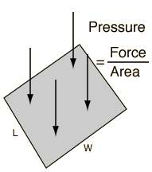

Pressure Calculation
Pressure
is defined as force per unit area and the standard unit is the Pascal.
Pressure
=
Force
/
Area
x 10^
Pa =
N/
m
2
You may enter data for any two of the quantities. Then click on the active text above for the quantity you wish to calculate. The quantities will not be forced to be consistent until you click on the quantity to calculate.
If the Length is
L=
m
L=
ft
and the Width is
W=
m
W=
ft,
the corresponding Area is
A=
m
2
A=
ft
2
.
If the area is changed, by default the width will be adjusted for consistency.

Force =
N
Force =
lb
Pressure is quoted in various units.
Pressure =
kPa
Pressure =
lb/in
2
Pressure =
mmHg
Pressure =
atmos
Index
Pressure concepts
HyperPhysics
*****
Mechanics
*****
Fluids
R Nave
Go Back